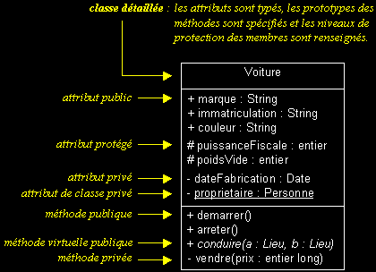

|
|
|
Les vues statiques d'UML (suite...)
LES CLASSES
q
Classe : sémantique et notation
- Une classe est un type abstrait caractérisé par des propriétés (attributs et méthodes) communes à un ensemble d'objets et permettant de créer des objets ayant ces propriétés.
Classe = attributs + méthodes + instanciation
- Ne pas représenter les attributs ou les méthodes d'une classe sur un diagramme, n'indique pas que cette classe n'en contient pas.
Il s'agit juste d'un filtre visuel, destiné à donner un certain niveau d'abstraction à son modèle.
De même, ne pas spécifier les niveaux de protection des membres d'une classe ne veut pas dire qu'on ne représente que les membres publics. Là aussi, il s'agit d'un filtre visuel.
Documentation d'une classe (niveaux d'abstraction), exemples :

Attributs multivalués et dérivés, exemples :
Classe abstraite, exemple :
Template (classe paramétrable), exemple :
|
|
|